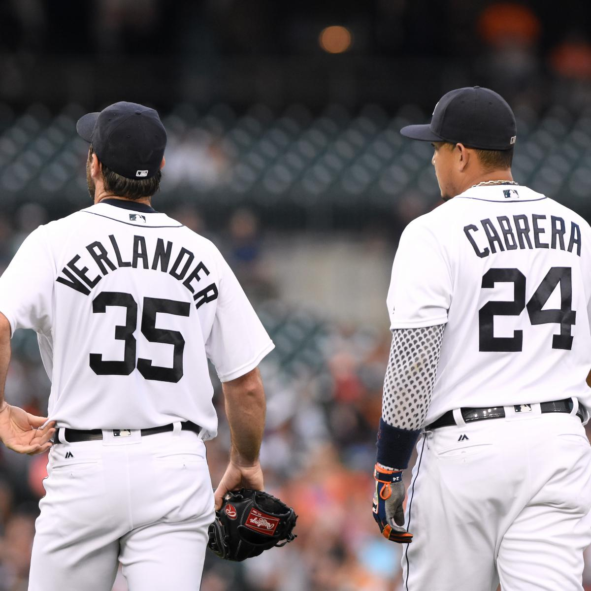
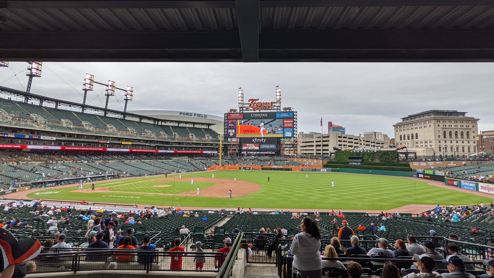
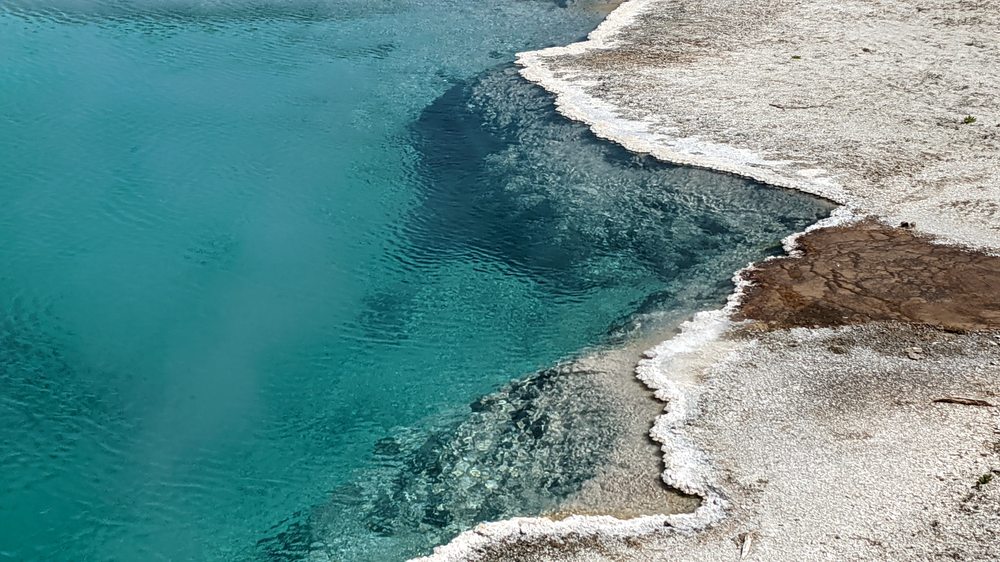
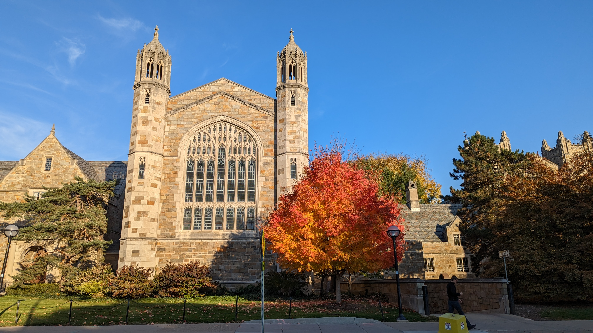

Baseball
Although I've never played in my life, baseball has been my favorite sport for the last ten years. I'm a passionate Detroit Tigers fan... Unfortunately I picked a bad time to become interested in their success. I've always enjoyed the role analytics play in the modern game, helping athletes improve and get the most out of their abilities. Additionally, it's impossible not to enjoy the influence of future hall-of-famers such as Miguel Cabrera and Justin Verlander, forever Tigers in my eyes. More recently, however, my focus has shifted. Nowadays I like following Detroit's young prospects as they work their way up the ladder to the major leagues and into stars in their own right, and attending games at Comerica Park.
The logo of my favorite team, the Detroit Tigers
Justin Verlander and Miguel Cabrera standing together. Verlander was traded to the Houston Astros in 2017 after several years of dominance in Detroit.
Comerica Park, as captured by my phone
Photography
Ever since upgrading to a phone with a nicer camera, I have become something of an amateur photographer. If I see something that looks particularly nice, usually something related to nature, I love trying to find a nice angle for a photo. Sometimes I am lucky and get helped out by technology to make the picture even better. I promise none of these three are such pictures!
For a more detailed view of the kinds of pictures I've taken, please take a look at the vacation section, where I go into detail of three of my favorite trips, to Utah/Arizona, Yellowstone National Park, and San Francisco.
Fall colors in Oakland Twp, MI
Running water in Yellowstone River, WY
One of the many pools/springs in West Thumb Geyser Basin, Yellowstone, WY
College
Coming to the University of Michigan has been such an amazing experience for me! The inner sports fan in me loves being able to root on our football and basketball teams, and there are so many fantastic buildings on campus to take photos of. More importantly than anything, I have really come to enjoy the sense of community I have found at this university through my peers in the classroom and through clubs.
Fall colors in the Diag, taken from Hatcher steps

Michigan Stadium, minutes before kickoff against Michigan State. The Wolverines won handily, a signature part of their undefeated 2022 regular season.
Law building on Central Campus, taken from State St.